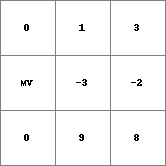
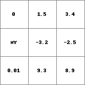

ordinal
ordinal
Data conversion to the ordinal data type
Result = ordinal(expression)
- expression
- spatial, non spatial
boolean, nominal, scalar, directional, ldd
- Result
- dimension of expression
ordinal
Operation
- If expression is a PCRaster map or a calculation resulting in a PCRaster map, it is converted: if expression is of one of the data types boolean, nominal or ldd, the cell values on expression are assigned without change to the corresponding cells on Result; if expression is of data type scalar or direction, the values on expression are truncated.
- Or the operator generates a map of ordinal data type with one constant value.
If expression has no PCRaster data type, an ordinal Result is generated. This is the case if expression is a number. This number must be in the domain of the ordinal data type, i.e. a whole value. Result will be a map with the same location attributes as the global clone map; all cells will have the value of expression.
Notes
A cell with missing value on expression is assigned a missing value on Result.
Group
This operation belongs to the group of Conversion and assignment
Examples
• pcrcalc
binding
Result = Result.map;
Expr = Expr.map;
initial
report Result = ordinal(Expr);
• python
Expr = readmap(“Expr.map”)
Result = ordinal(Expr)
| Result.map |
Expr.map |
| 
|

|